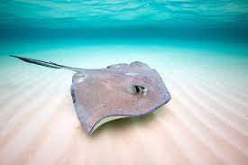
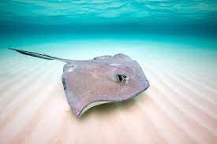

Welcome to Stingrays
Stingray Anatomy
Stingrays generally grow up to about six and a half feet and weigh up to 750 pounds. Their anatomy is very closely related to the shark family. They are supported by cartilage instead of bones. Their stingers are different on each animal but the most dangerous to humans are the sharp and venomous spines. Like birds, they flap their fins up and down to glide through the water. Their eyes lay on the top of their body which makes it difficult to move but where they normally lay, under the sand on the ocean floor, it gives them a perfect visual. Opposite of that, their mouth sits on the bottom making it easy to get to any smaller animals that lay on the ocean floor as well. Lastly their gills, the main resemblance to sharks, are in a row of five on the bottom of their body helping them breathe.
Stingray hunters
Stingrays are hunted by both their surroundings in the ocean and humans. The biggest threat in the waters are sharks, elephants, and killer whales. However, they make it hard to be targeted because they lay flat on the bottom of the ocean floor. Rays have always been victims to the shrimp and fish trawls by accident. But, recently there is a growing demand in their skin. They are attacking them in large numbers for things such as wallets, watch straps, boxes, bags, and sword handles. The demand has grown because people have realized how it can resist abrasions, punctures, can handle higher temperatures, and can last years if it’s well maintained.
.jpg)
 
